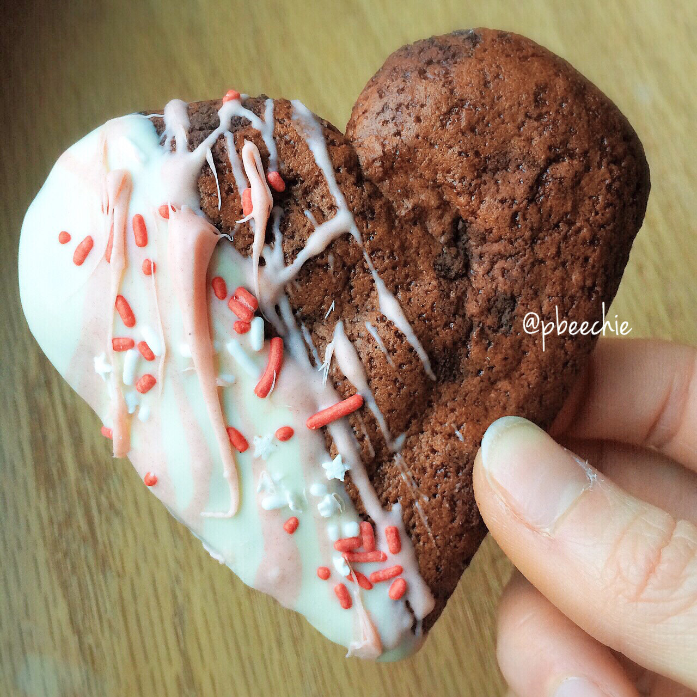

Double Chocolate Chunk Heart Cookies

Quest love is forever. Double chocolate chunk quest nutrition cookies dipped in sugar free white chocolate. Plus sprinkliessss, the true measurement of love. All in a heart shape #baww #vday see what I did there. Easy cookies I made to get in the Valentine's Day spirit :) I'm a sucker for cute themed treats. What'd everyone do for the holiday? Anything special, or absolutely nothing different?
Double Chocolate Chunk Heart Cookies
Makes: 2 cookies
-
1 double chocolate chunk quest bar
Microwave your quest bar for 8-10 seconds just to soften it up. Lay on a counter and flatten it out! If you have a rolling pin, that helps a lot. Once flat, cut it half. Mold each into a heart - If you can't mold it, it helps to just cut it into a heart. Place on a baking sheet sprayed with nonstick spray and bake them at 375 F for 8-9 minutes until crisp.
Microwave your chocolates for 45-60 seconds until melted! I removed a little bit and added 1-2 drops of red food coloring to make it pink. Dip each cookie in the white chocolate. Once cooled, drizzle some of the pink white chocolate to decorate. Also add some sprinkles! Let cool, then enjoy!